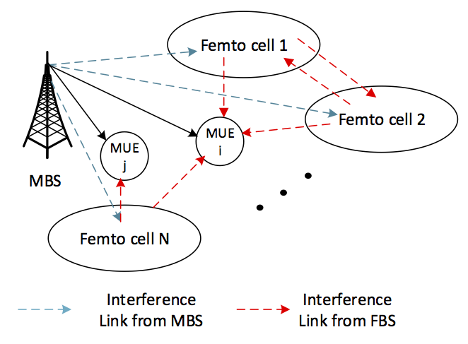

Research Projects
Outage Balancing for Femtocell Networks
 Given channel statistics information either locally at each femtocell base-station (FBS) or
collected at some control node, we aim at optimizing certain system parameters based on the outage probability for FUEs and MUEs.
In a two-tier heterogenous network, interference comes from both the intra-tier (femto-to-femto, macro-to-macro)
and cross-tier (femto-to-macro, macro-to-femto). Based on similar model, we managed to solve the following two problems
- With resource allocation fixed, jointly optimize the rate allocation and power allocation for each link.
- With rate requirement fixed, jointly optimizing resource allocation and power allocation for each link.
In both cases, we are trying to optimize a network metric based on outage probability, which provide certain fairness among
base-stations as well. While Problem 1 is reduced to a geometric programming problem, Problem 2 is much more challenging
with a mixed-integer non-convex nature. To tackle the challenge, the joint optimization is decomposed into an iterative
alternating optimizing procedure: 1) With resource allocation fixed, power allocation is optimally solved distributively
utilizing the non-linear Perron-Frobenius Theorem. 2) With power allocation fixed, the resource allocation is updated using
a local search strategy. The designed algorithm is effective in greatly reducing the system outage probability and allocate
orthogonal resources to links with potentially high mutual interference.
Interference Mitigation with Queue Stability Consideration
Game Theory and Its Applications
Improving Spectral Efficiency for ad hoc Networks
Course Projects
{% for proj in site.courseProj %}
{{ proj.title }}
{{ proj.content }}
{% endfor %}